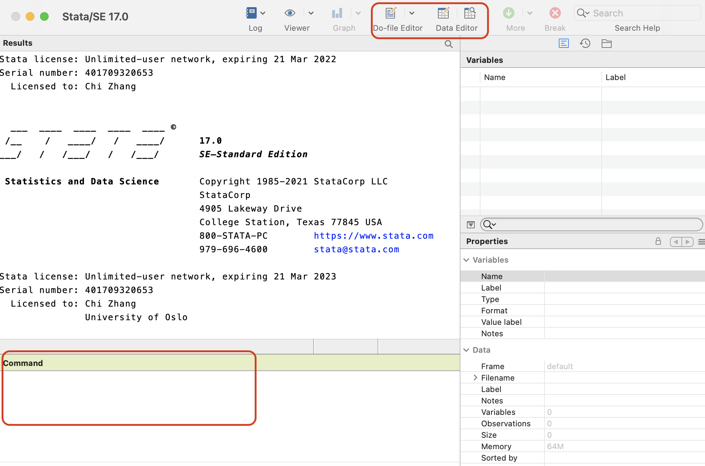
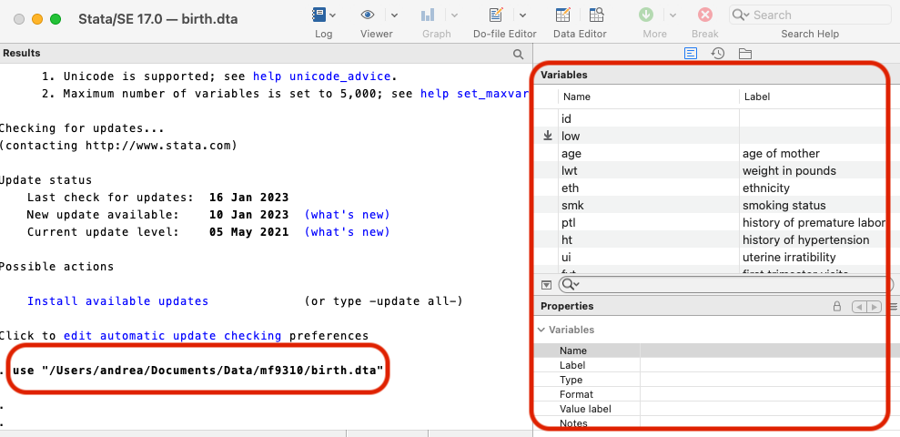
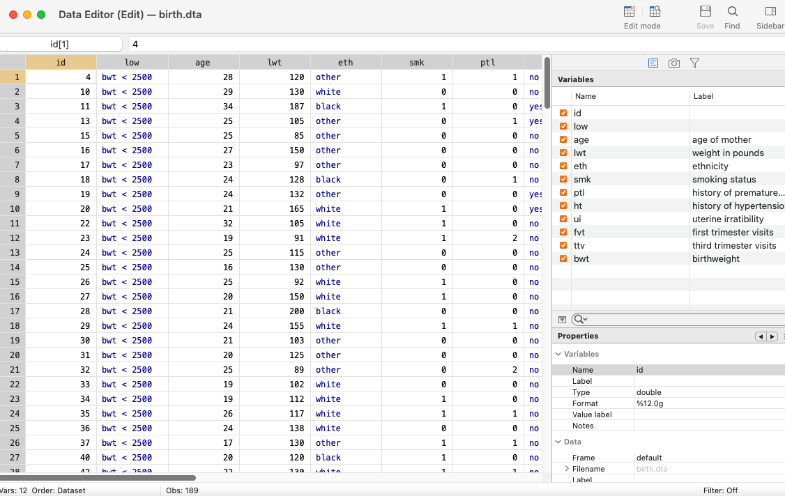
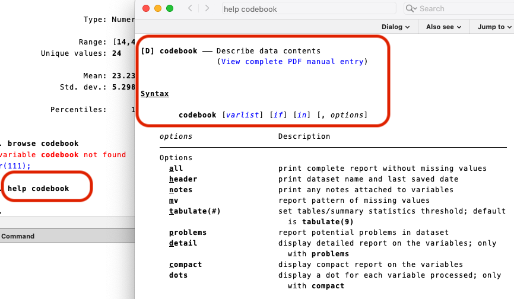
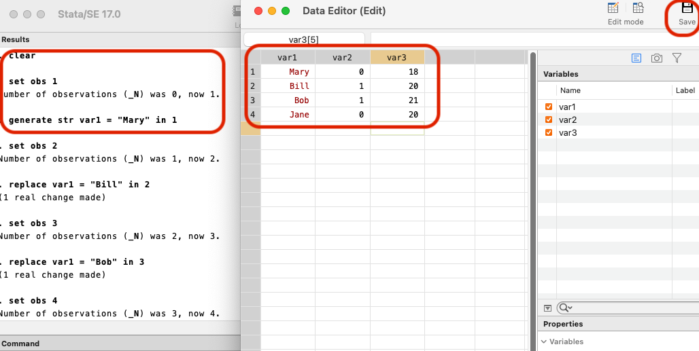
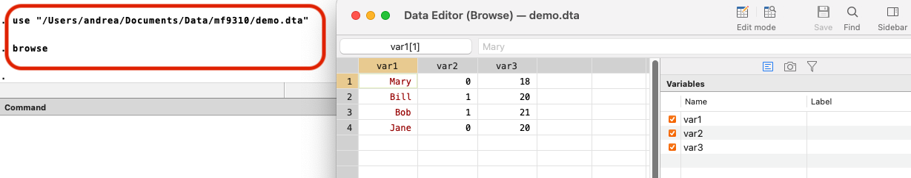
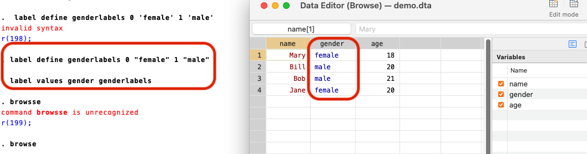
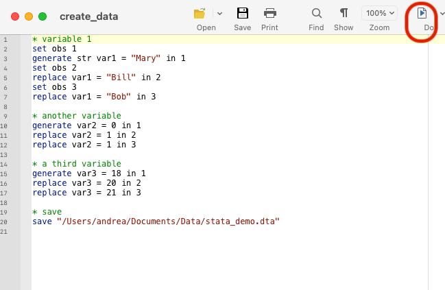
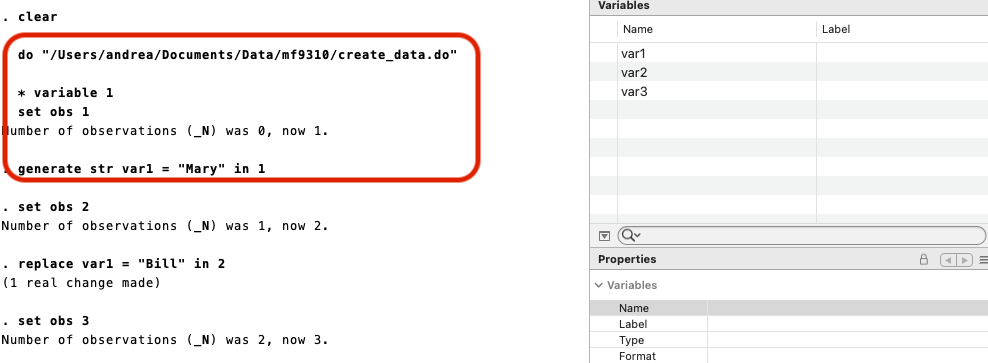

11 Introduction to STATA
Useful resources:
- STATA tutorial by LSE
11.1 Get started
Basic components of the user interface:
- command window: type in command to tell stata what to do
- do-file editor: write and execute
do-filescripts - data editor: makes it easy to edit and inspect data

When you execute a command, write the command in the command window, then hit Enter.
For example, you can execute the command use to load data, and use browse to open up the data editor.

Data editor looks like this:

11.1.1 File system: where things are
It is recommended to have different folders to stay organized. For example, you can have
- one folder for your scripts (such as
do-file), - one folder for data (for examplem,
csv,dta,xlsx), - one folder for documentation.
11.1.2 Get help
In the command, type help *command_name* to open up the documentation:

Alternatively, use Google.
11.2 Data entry, import and manipulation
Data format: data.dta
11.2.1 Enter data manually
Open the data editor, and type in data. This is equivalent to the commands in the command window, which you can see in the Results panel.

Save your data by clicking Save on the data editor. This is equivalent to the following command:
save "data/path/demo_data.dta"11.2.2 Import data
Load (import) data by the command use, then specify the path of the data file.
Write browse to view the data, or alternatively, click the data editor icon.
use "data/path/demo_data.dta"
11.2.3 Basic manipulation
Change variable names with rename
rename var1 name
rename var2 gender
rename var3 ageAdd labels to variables, or change their properties with label command.
It is worth noting that stata recognize double quote "". Single quote will produce errors.

11.3 Use do files
do files are useful to save and document your analysis for the future. An example looks like this:

To run (execute) a do file, write do *filename.do* in the command; alternatively, hit Do icon
do filename.doYou might need to use clear to remove data object before creating a new data.
